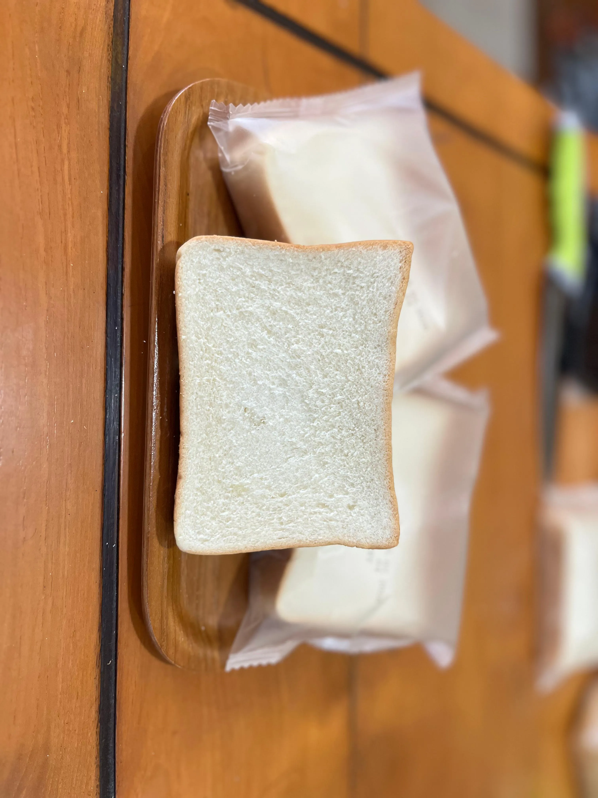
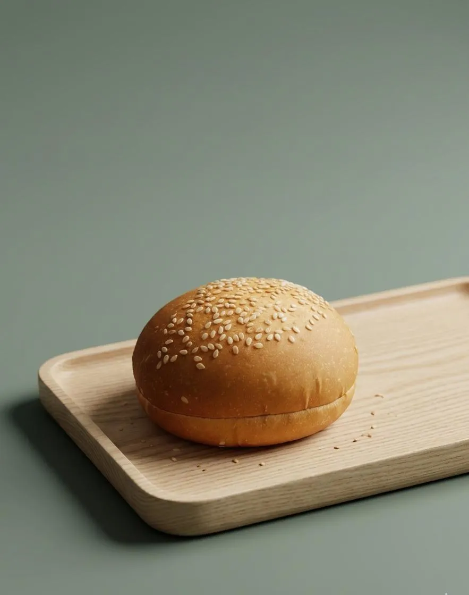
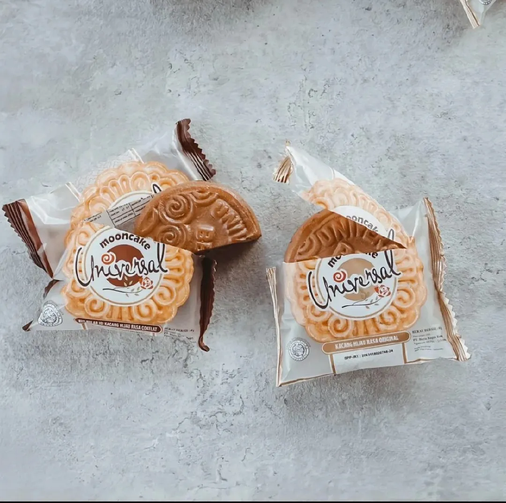
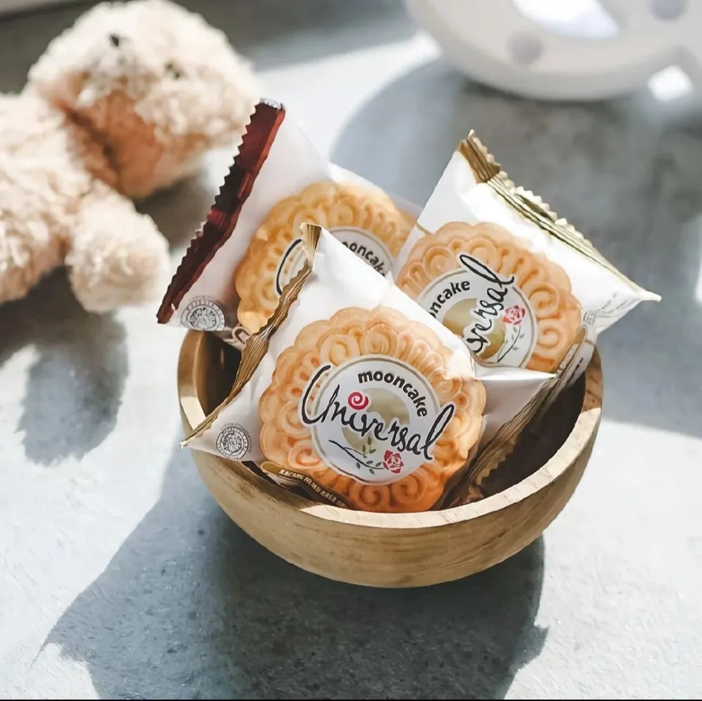
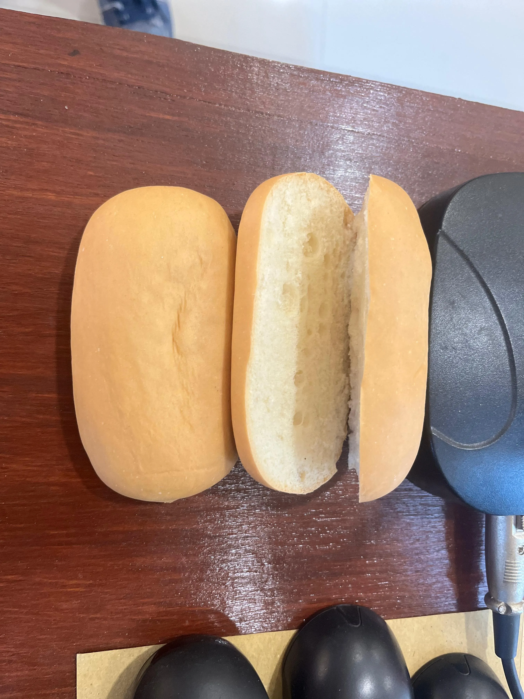

Produk Unggulan
Roti burger tabur wijen yang lembut, empuk, dan memiliki daya tahan ideal. Sangat cocok sebagai menu utama pemenuhan gizi harian anak-anak sekolah maupun konsumsi katering.
Kami memproduksi roti berkualitas tinggi secara konsisten di fasilitas Baron, Nganjuk, melayani kebutuhan pasokan harian distributor, ritel modern, katering, dan toko di seluruh Jawa Timur.



Berdiri kokoh di Kabupaten Nganjuk, PT Bayu Bagus Bakery merancang lini produksi modern untuk menyuplai roti dan kue dalam volume besar dengan standar kebersihan tertinggi.
Kami bangga menjadi mitra strategis bagi distributor grosir, warung, minimarket, serta penyedia katering dengan jaminan ketepatan waktu pengiriman.
Diproduksi segar setiap hari dengan bahan berkualitas pilihan untuk menjamin kepuasan konsumen Anda.
Roti burger tabur wijen yang lembut, empuk, dan memiliki daya tahan ideal. Sangat cocok sebagai menu utama pemenuhan gizi harian anak-anak sekolah maupun konsumsi katering.

Kue bulan legendaris khas Universal dengan isi kacang hijau premium yang manis dan legit. Dikemas secara higienis dalam kemasan eksklusif ritel.

Roti hotdog panjang belah yang praktis dan serbaguna. Dibuat tanpa isian agar memudahkan katering melakukan kustomisasi menu secara cepat.
Roti tawar kupas bertekstur ultra-lembut dengan ketebalan presisi. Diproduksi fresh setiap subuh untuk menyuplai katering industri dan agen grosir.
Hubungi kami untuk katalog lengkap varian roti dan produk kustom B2B lainnya.
Proses pembuatan roti terotomatisasi yang menjamin pasokan ribuan pak roti setiap harinya secara konsisten tanpa hambatan stok.
Setiap helai dan butir roti disegel rapat dengan kemasan berlogo resmi, menjaga kebersihan dan kesegaran lebih lama di rak display toko Anda.
Lebih dari 119 ulasan positif di Google Maps membuktikan komitmen kami terhadap rasa roti, higienitas, dan kualitas layanan distribusi.
Akses logistik yang lancar dari fasilitas kami di Nganjuk memudahkan armada pengiriman menjangkau seluruh sudut kota di Jawa Timur dengan cepat.
Seluruh produk kami telah memiliki sertifikasi Halal resmi serta izin edar BPOM RI, menjamin keamanan konsumsi bagi pelanggan mitra retail Anda.
Hubungi tim pemasaran kami hari ini untuk berdiskusi mengenai penawaran harga khusus grosir, pengiriman sampel gratis, atau kontrak pasokan rutin.
RT.02/RW.02, Garu, Kec. Baron, Kabupaten Nganjuk, Jawa Timur 64394
| Senin – Jumat | 08.00 – 15.00 |
| Minggu | 08.00 – 15.00 |
| Sabtu | Tutup |
Untuk pengajuan sampel produk gratis atau kerjasama kemitraan, silakan hubungi WhatsApp kami dengan menyertakan nama usaha dan wilayah operasional Anda.